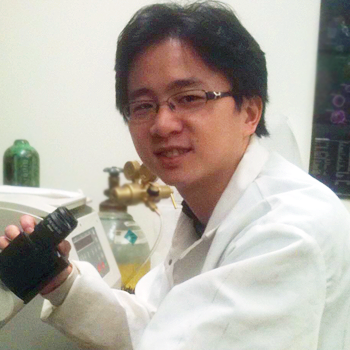

<div class="container">
    <div class="row">
        <div id="speaker-detail" class="col-lg-6 col-lg-offset-3">
            <div class="row">
                <button title="Close (Esc)" type="button" class="mfp-close">×</button>
                <div class="col-md-4 col-lg-4">
                    
                    <br />
                </div>
                <div class="col-md-8 col-lg-8">
                    <h2>Eric Peng, Ph. D. 彭浩帆博士</h2>
                    <h3>Sr. Engineer, Process Development, Biogen Idec</h3>
                    <p>Haofan (Eric) Peng is a senior engineer in the cell culture development group at Biogen Idec. He obtained his chemical engineering BS degree at National Taiwan University. He received his PhD from the SUNY Buffalo in chemical and biological engineering where he focused on regenerative medicine and preclinical animal model. In Biogen Idec, he is team leader in perfusion bioprocessing development cross functionally including Cell line evaluation, medium optimization, process development, filtration integration, operation automation and manufacture scale up to 15,000L world-class facility. He is also working closely with GMP manufacture facility in RTP, North Carolina, and responsible for raw material screening, analytical assay development, quality control bioassay transferring, and supply chain management.
                    </p>
                </div>
            </div>
        </div>
    </div>
</div>